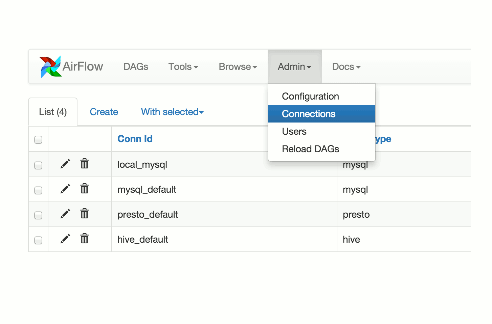

{kind=link}
아파치 에어플로우(Apache Airflow) 문서¶
에어플로우는 워크플로우를 프로그램 방식으로 만들고, 스케줄링하고, 모니터하는 플랫폼이다.
에어플로우를 사용하여 태스크(task)의 비방향 순환 그래프(Directed Acyclic Graph, DAG)로 워크 플로우를 제작할 수 있다. 에어플로우 스케쥴러(scheduler)는 명시된 종속성을 따르는 동안 워커(worker)의 배열에 대한 태스크를 실행한다. 리치 커맨드 라인(Rich command line) 유틸리티는 복잡한 DAG에 대한 작업(surgeries)을 쉽게 할 수 있다. 풍부한 사용자 인터페이스는 실행중인 파이프라인을 시각화 하고, 진행 상황을 모니터하고, 필요할 때에는 문제를 해결하는 것을 쉽게 만든다.
워크플로우(workflow)가 코드로 정의되면, 이전보다 더 유지 보수할 수 있고, 버져닝할 수 있고(versionable), 테스트할 수 있으며, 공동으로 사용할 수 있다.
원칙¶
- Dynamic: 에어플로우 파이프라인은 코드(Python)로 구성되며, 동적인 파이프라인 생성을 허용한다. 이는 동적 파이프라인의 인스턴스화하는 코드 작성을 허용한다.
- Extensible: 운영자(operators), 실행자(executors)를 쉽게 정의하고, 라이브러리를 쉽게 확장하여 환경에 적합한 추상화 수준을 맞게 한다.
- Elegant: 에어플로우 파이프라인은 린(lean)하고 분명(explicit)하다. 스크립트를 파라미터화 하는 것은 강력한 Jinja 템플릿 엔진을 사용하여 에어플로우의 코어(core)안에 내장되어 있다.
- Scalable: 에어플로우는 모듈화된 구조를 가지고 있으며 메세지 큐를 사용하여 임의의 수의 워커를 조정한다. 에어플로우는 무한하게 확장될 준비가 되어 있다.
한계를 넘어서¶
에어플로우는 데이터 스트리밍 솔루션(data streaming solution)이 아니다. 태스크는 데이터를 한 곳에서 다른 곳으로 옮기지 않는다(태스크는 메타데이터를 교환할 수 있긴 하다). 에어플로우는 Spark Streaming 이나 Storm 영역 안에 있지 않으며, 이보다는 Oozie 또는 Azkaban와 비교될 수 있다.
워커플로우는 대부분 정적이고 천천히 변경될 것으로 예상한다. 워크플로우의 태스크의 구조가 데이터베이스 구조보다 약간 더 동적이라고 생각할 수 있다. 에어플로우 워크플로우는 다음 작업까지의 동작이 유사할 겻으로 기대되며, 이를 통해 작업 단위 및 연속성을 명확하게 할 수 있다.
내용¶
- 프로젝트(Project)
- 라이센스(License)
- 빠른 시작(Quick Start)
- 설치
- 튜토리얼(Tutorial)
- 사용 가이드
- RBAC UI에서 새로운 역할 추가
- Configuration 옵션 설정
- 데이터베이스 백엔드 초기화
- 오퍼레이터 사용
- BashOperator
- Dingding Operators
- Google Cloud Operators
- Google Cloud Bigtable Operators
- Google Compute Engine Operators
- Google Cloud Functions Operators
- Google Cloud Storage Operators
- Google Cloud Spanner Operators
- Google Cloud Text to Speech Operators
- Google Cloud Speech to Text Operators
- Google Cloud Sql Operators
- Google Cloud Transfer Service Operators
- Google Cloud Translate Operators
- Google Cloud Vision Operators
- PythonOperator
- 커넥션(Connection) 관리
- 커넥션 보안
- 암호화 키 회전(rotating)
- 로그 쓰기(Writing Logs)
- Scaling Out with Celery
- Scaling Out with Dask
- Scaling Out with Mesos (community contributed)
- Running Airflow behind a reverse proxy
- 에어플로우 systemd로 실행
- Running Airflow with upstart
- Using the Test Mode Configuration
- 에어플로우 Health 상태 체크하기
- UI / 스크린샷(Screenshots)
- 개념
- Command Line Interface
- 스케쥴링(Scheduling)& 트리거(Triggers)
- Plugins
- 보안
- 타임 존(Time zones)
- Experimental Rest API
- Integration
- Azure: Microsoft Azure
- AWS: Amazon Web Services
- Databricks
- GCP: Google Cloud Platform
- Qubole
- Metrics
- Kubernetes
- Lineage
- Changelog
- FAQ
- Why isn't my task getting scheduled?
- How do I trigger tasks based on another task's failure?
- Why are connection passwords still not encrypted in the metadata db after I installed airflow[crypto]?
- What's the deal with
start_date? - How can I create DAGs dynamically?
- What are all the
airflow runcommands in my process list? - How can my airflow dag run faster?
- How can we reduce the airflow UI page load time?
- How to fix Exception: Global variable explicit_defaults_for_timestamp needs to be on (1)?
- How to reduce airflow dag scheduling latency in production?
- Macros reference
- API Reference